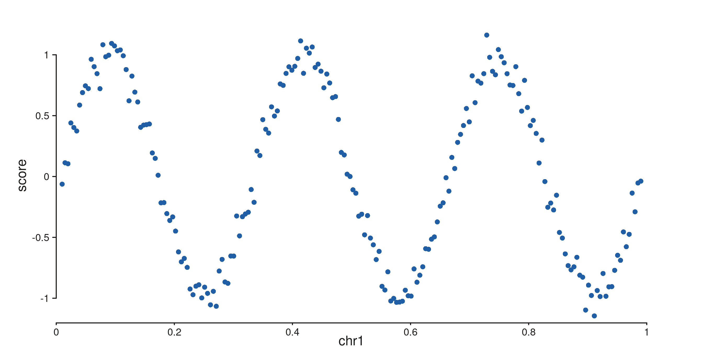
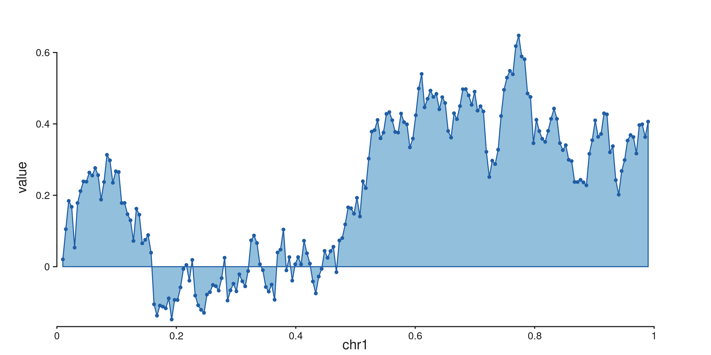
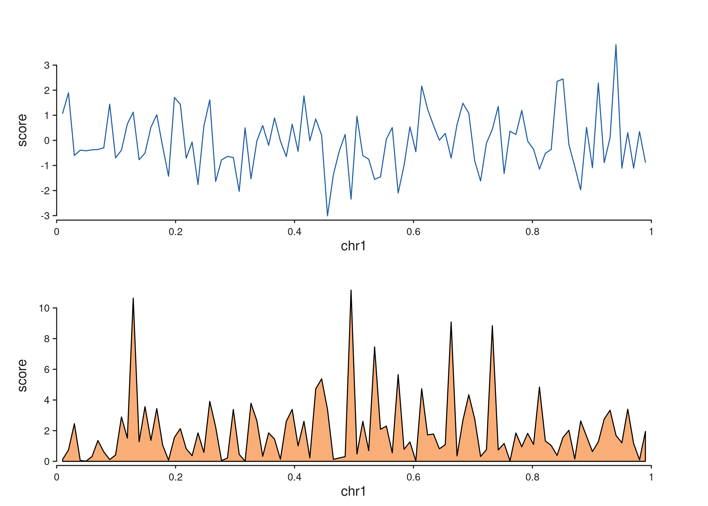

SeqPlotR builds genomic figures by composing a plot, tracks, and
elements with a single %+% operator — modelled on ggplot2
but specialised for GRanges data. This vignette walks
through the minimum you need to render a plot end-to-end.
library(SeqPlotR)
#>
#> Attaching package: 'SeqPlotR'
#> The following object is masked from 'package:base':
#>
#> %||%
library(GenomicRanges)
#> Loading required package: stats4
#> Loading required package: BiocGenerics
#> Loading required package: generics
#>
#> Attaching package: 'generics'
#> The following objects are masked from 'package:base':
#>
#> as.difftime, as.factor, as.ordered, intersect, is.element, setdiff,
#> setequal, union
#>
#> Attaching package: 'BiocGenerics'
#> The following objects are masked from 'package:stats':
#>
#> IQR, mad, sd, var, xtabs
#> The following objects are masked from 'package:base':
#>
#> anyDuplicated, aperm, append, as.data.frame, basename, cbind,
#> colnames, dirname, do.call, duplicated, eval, evalq, Filter, Find,
#> get, grep, grepl, is.unsorted, lapply, Map, mapply, match, mget,
#> order, paste, pmax, pmax.int, pmin, pmin.int, Position, rank,
#> rbind, Reduce, rownames, sapply, saveRDS, table, tapply, unique,
#> unsplit, which.max, which.min
#> Loading required package: S4Vectors
#>
#> Attaching package: 'S4Vectors'
#> The following object is masked from 'package:utils':
#>
#> findMatches
#> The following objects are masked from 'package:base':
#>
#> expand.grid, I, unname
#> Loading required package: IRanges
#> Loading required package: SeqinfoThe four primitives you need
A SeqPlotR figure is always built from these pieces:
| Piece | What it does |
|---|---|
seq_plot() |
Creates a new plot. |
seq_track() |
Adds a genomic panel with a windows range. |
map(...) |
Declares data-driven aesthetics (x, y,
color, …). |
aes(...) |
Declares constant aesthetics and theme keys. |
Elements (seq_point, seq_line,
seq_area, …) are drawn inside a track. The %+%
operator chains everything together and dispatches on the right-hand
side’s class.
A first plot
win <- GRanges("chr1", IRanges(1, 1e6))
gr <- GRanges("chr1",
IRanges(start = seq(1e4, 9.9e5, length.out = 200), width = 1),
score = sin(seq(0, 6*pi, length.out = 200)) +
rnorm(200, 0, 0.1))
p <- seq_plot() %+%
seq_track(data = gr, mapping = map(x = start, y = score), windows = win) %+%
seq_point(aesthetics = aes(color = "#205EA6", size = 0.4))
p$plot()
The track holds the defaults (data, mapping, windows); the element
seq_point() inherits them.
Layering several elements in one track
%+% on a plot adds elements to the most recently
added track, so two elements in a row draw on top of each
other:
gr_line <- GRanges("chr1",
IRanges(seq(1e4, 9.9e5, length.out = 200), width = 1),
value = cumsum(rnorm(200)) * 0.05)
p <- seq_plot() %+%
seq_track(data = gr_line, mapping = map(x = start, y = value), windows = win) %+%
seq_area(aesthetics = aes(fill = "#92BFDB", color = "#205EA6", baseline = 0)) %+%
seq_point(aesthetics = aes(color = "#205EA6", size = 0.3))
p$plot()
Two tracks side by side: %|% and %__%
%|% and %__% are convenience aliases for
%+% that set direction = "right" or
direction = "under" on the track they introduce:
gr_a <- GRanges("chr1", IRanges(seq(1e4, 9.9e5, length.out = 100), width = 1),
score = rnorm(100))
gr_b <- GRanges("chr1", IRanges(seq(1e4, 9.9e5, length.out = 100), width = 1),
score = rexp(100, rate = 0.5))
p <- seq_plot() %|%
seq_track(data = gr_a, mapping = map(x = start, y = score),
windows = win, track_id = "A") %+% seq_line(aesthetics = aes(color = "#205EA6")) %__%
seq_track(data = gr_b, mapping = map(x = start, y = score),
windows = win, track_id = "B") %+% seq_area(aesthetics = aes(fill = "#F9AE77"))
p$plot()
Printing
seq_plot carries an S3 print method, so a
bare expression in a script or knitr chunk auto-renders —
p$plot() is equivalent.
Where to go next
-
vignette("patchwork-layouts", "SeqPlotR")— multi-cell layouts with a layout string. -
vignette("wrappers", "SeqPlotR")— higher-level wrappers (seq_copynumber,seq_hic,seq_chip, …). -
vignette("links", "SeqPlotR")— cross-track arcs, arches, synteny, and zoom links.